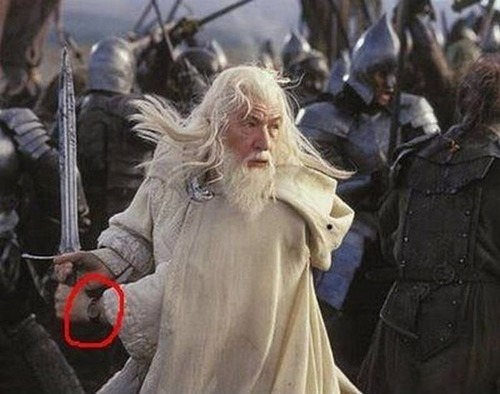

What the hell is Technological Watch?
Tech Watch
is SERIOUS BUSINESS
Thus said the Ancients:
The 5 first phases
of the Tech Watch Process
in IT firms
are...
1/5 - Identify and analyse
the company's information needs
2/5 - Search and obtain the necessary information
3/5 - Evaluate and analyse the information obtained
4/5 - Disseminate the results
5/5 - Use the information
in the decision making process
These five phases are executed
continuously and cyclically.

Often the decisions made imply the existence
of new researches, starting a new cycle.
But AFAIK,
this all POV is an ideal scenario
and such things just never happend this way.
in tech agencies
DISRUPTION
is the natural way things happend.
You just don't even know
what the next project is made of.
Now let's avoid stop-gap solutions
(& stack-overflow driven development)
You need serious stuff
Choose your weapons technologies
Prepare to fight code & ship
and use MAGIC as often as possible
Some simple hints

that you could be interested in
Read articles.
75% of my TW is reading, 25% is practicing
If you don't read, just don't write neither.
Read, comment, share
tag as favorite any good finding
You won't memorize it all
but you'll always know where to find it again
Improve your Elfish English
through reading technical english articles,
If you can't stand reading
technical english articles
just stop computer science right now.
But no worries about your English
Skills come with practice.
The Art Of Staying Up To Date
- Follow the trends
- Observe other's passions
- Note public successfull projects
- Note what the
nice leazy guys use
- But be warn of tech adverstising hidden in tech talks
Right now, you are just choosing
what your carrier will be!
So let's detail the good stuff:
Follow people who tweets about TECH
- Sharing, not taunting nore live-tweeting
- Unfollow talkative parrots
- Leave your own Twitter timeline clean
(recruiters read such things)
Subscribe to a few newsletters
Weekly newsletters is best tempo
Keep an eye in best active places
Always check the community size
Always evaluate the adoption rate
Be aware of tech you hear over and over
git, vagrant, BDD, Agile, NOSQL,
Scala, Golang, whatever
You're not getting old
if you're not getting bored
Stay curious for the rest of your life. Get excited
Not out of compulsion
Choose a small list of very smart sources,
and just read them regularly
Unfollowing, unsubscribing is very OK
Start a devlog
Do not underestimate the power of writing things down.
Share your experiences & expect feedbacks
IMHO, for developers
devblogging is personal branding the right way.
DEMO : Write Pages on Github
DEMO : FOLLOW & organize LISTS
[TODO] Promote your
weekly tech watch